三、算法篇
3.1 算法与复杂度
（1）什么是算法
① 图灵机
算法是为解决一类问题而规定的一组明确步骤。对约定的有效输入，它应能在有限步内结束并给出结果。
图灵机是图灵于 1936 年提出的计算模型：读写头根据当前状态和纸带上的符号执行规则，更新符号、移动并改变状态。它用来研究哪些问题可计算，而不是描述实际计算机的硬件。一个重要边界是停机问题：不存在能对任意程序及输入都正确判定其是否停机的通用算法。
② 抽象与实现
抽象描述做什么，实现说明怎么做。 print("hello") 表达的是将文本写入输出流；输出流可以连接终端，也可以重定向到文件。调用者使用相同接口，不必依赖某个解释器或操作系统的输出步骤。
③ 程序与算法
算法与程序：算法说明求解步骤；程序用具体语言实现这些步骤，还要处理输入输出、异常和控制流。下面的例子说明，实际执行路径由语言规则决定，而不是由代码看起来的缩进决定。
Apple经典"goto fail" BUG
if ((err = SSLHashSHA1.update(&hashCtx, &serverRandom)) != 0)
goto fail;
if ((err = SSLHashSHA1.update(&hashCtx, &signedParams)) != 0)
goto fail;
goto fail; // ←←← 罪魁祸首
if ((err = SSLHashSHA1.final(&hashCtx, &hashOut)) != 0)
goto fail;第二条 goto fail; 的缩进看似仍属于条件分支，但没有花括号将它纳入分支。执行到这里时会无条件跳转，后续校验因此被跳过。
这里的关键是：SSLHashSHA1.final() 根本没有执行。
（2）算法复杂度
算法复杂度描述资源消耗随输入规模的增长趋势：时间复杂度关注基本操作次数，空间复杂度关注内存需求。大 O 给出渐近上界，并不预测某次运行需要多少秒；比较两个结论时，要确认输入规模、操作模型及最好、平均或最坏情形是否一致。
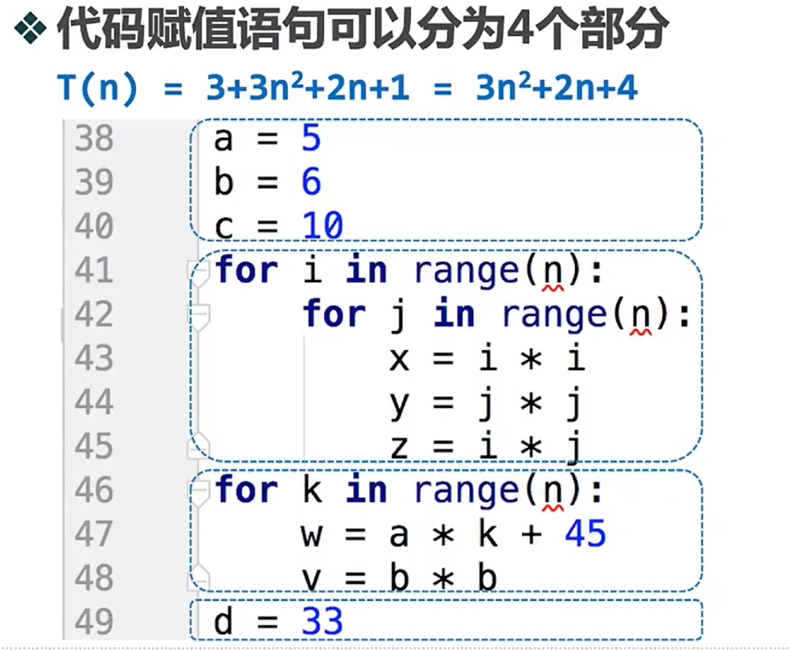
如上图所示，算法复杂度为O(n^2)
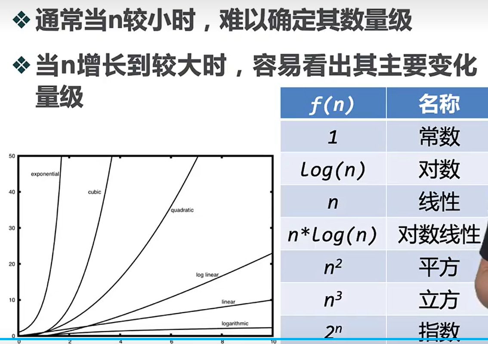
（3）例：变位词判断
① 逐字检查
等长字符串的逐字查找最坏需要 O(n^2) 次比较。
# 算法一：逐字检查
def anagramSolution(str_or, str_ch):
find_lis = []
OK = False
list_ch = list(str_ch)
for lor in str_or:
find = False
for pos, lch in enumerate(list_ch):
if lor == lch:
find = True
list_ch[pos] = None
break
else:
continue
find_lis.append(find)
if all(find_lis):
OK = True
return OK② 先排序后检查
把两个字符串排序后比较；排序主导时间，最坏为 O(n\log n)。
# 算法二：先排序后检查
def sortSolution(str_or, str_ch):
find_lis = []
OK = False
list_or = list(str_or)
list_ch = list(str_ch)
list_or.sort()
list_ch.sort()
for i in range(len(list_or)):
find = False
if list_or[i] == list_ch[i]:
find = True
find_lis.append(find)
if all(find_lis):
OK = True
return OK③ 计数器算法
分别统计字符出现次数再比较。对固定大小的字母表，时间为 O(n)。
# 算法三：计数器
def counterSolution(str_or, str_ch):
OK = False
counter_or = [0]*26
counter_ch = [0]*26
for i in range(len(str_or)):
pos_or = ord(str_or[i]) - ord('a')
pos_ch = ord(str_ch[i]) - ord('a')
counter_or[pos_or] += 1
counter_ch[pos_ch] += 1
if counter_ch == counter_or:
OK = True
return OK（4）Python 内置容器的操作代价
① 列表

- 索引与删除的成本不同：列表可以按下标直接定位，读取或替换单个元素为 O(1)。
pop(i)删除中间元素后，还需将后续引用前移，最坏为 O(n)。 - 四种生成前n个整数列表的方法：
def test1(): # 最慢
lis = []
for i in range(1000):
lis = lis + [i]
def test2(): # 较慢
lis = []
for i in range(1000):
lis.append(i)
def test3(): # 次快
lis = [i for i in range(1000)]
def test4(): # 最快
lis = list(range(1000))② 字典

list[i]按位置取元素通常为 O(1)；x in list逐项比较，最坏为 O(n)。x in dict检查键，散列分布适当时的期望时间为 O(1)。
3.2 递归、贪心与动态规划
（1）递归问题特点与三定律
递归把当前问题化为同类的较小问题。判断递归能否正确结束，要检查三件事：
- 终止条件：哪些输入可以直接给出答案？
- 规模缩小：每次调用是否确实向终止条件靠近？
- 递推关系：怎样用子问题的结果得到当前答案？
以下面的数列求和为例，每层保留一项，把剩余部分交给下一层求和。
def listSum(numList):
if not numList:
return 0
return numList[0] + listSum(numList[1:])（2）递归与栈
当一个函数被调用时，系统会把调用时的现场数据（栈帧）压入到系统调用栈。

递归深度：尚未返回的调用会占用栈帧。Python 对递归深度设有限制，触及限制时抛出 RecursionError；当前限制可用 sys.getrecursionlimit() 查看，不应依赖固定值。
任何一个递归程序，都可以通过引入一个栈保存中间结果的方式，翻译为一个非递归过程。
- 考虑如下的阶乘函数
def fact(n):
if n < 0:
raise ValueError("n 必须是非负整数")
if n == 0:
return 1
return n * fact(n - 1)
def norec_fact(n):
if n < 0:
raise ValueError("n 必须是非负整数")
res = 1
st = Stack()
# 显式保存待乘因子，模拟递归调用与回溯。
while n > 0:
st.push(n)
n -= 1
while not st.isEmpty():
res *= st.pop()
return res（3）递归的应用
递归的应用（一）: 任意进制转换（也可以翻译为用栈实现）
def toStr(n, base):
convertString = "0123456789ABCDEF"
if n < base:
return convertString[n] # 最小规模
return toStr(n//base, base) + convertString[n%base]递归的应用（二）: 分型
- 螺旋
import turtle
t = turtle.Turtle()
def Spiral(t, linelen):
if linelen > 0:
t.forward(linelen)
t.right(90)
Spiral(t, linelen - 5)
Spiral(t, 100)
turtle.done()- 分形树

def tree(branch_len):
if branch_len > 5:
t.forward(branch_len) # 画树干
t.right(20) # 右转20度
tree(branch_len - 15)
t.left(40)
tree(branch_len - 15)
t.right(20)
t.backward(branch_len)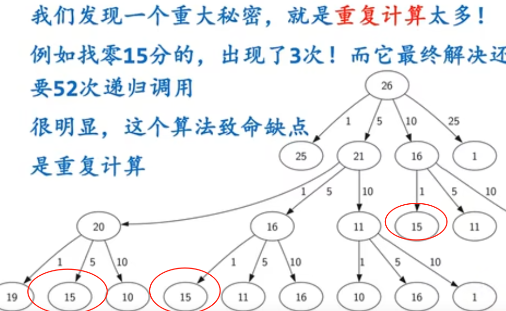
- 谢尔宾斯基三角形
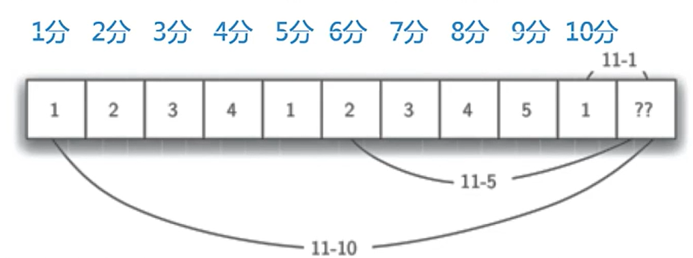
伪代码：
points = {
'left': (-200, 0),
'right': (200, 0),
'top':(0, 100)
}
def Sierpinski(degree, points):
drawTriangle(points)
if degree > 0:
# 绘制左侧三角形
Sierpinski(degree - 1, {
'left': points['left'],
'top': getMid(points['left'], points['top']),
'right':getMid(points['left'], points['right'])
}
)
# 绘制上面的三角形(同理)
# 绘制右边的三角形递归的应用（三）: 汉诺塔
汉诺塔由 Édouard Lucas 于 1883 年提出。目标是借助 B 柱，将 A 柱上的 n 个盘子全部移到 C 柱；每次只移动一个盘子，大盘不能压在小盘上。
- 借助 C，把上方 n-1 个盘子从 A 移到 B。
- 把最大的盘子从 A 移到 C。
- 借助 A，把 B 上的 n-1 个盘子移到 C。
只有一个盘子时直接移动。因此最少步数满足 T(1)=1、T(n)=2T(n-1)+1，即 2^n-1。传说中的 64 个盘子约需 1.84\times10^{19} 步。
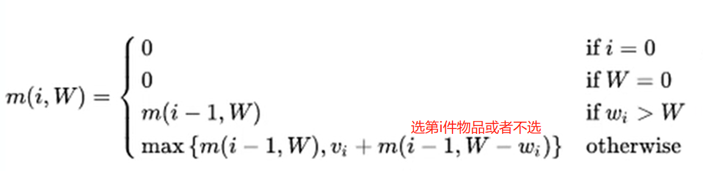
def moveTower(height, fromPole, withPole, toPole):
if height >= 1:
moveTower(height - 1, fromPole, toPole, withPole)
moveDisk(height, fromPole, toPole)
moveTower(height - 1, withPole, fromPole, toPole)
def moveDisk(disk, fromPole, toPole):
print(f"Moving Disk[{disk}] from {fromPole} to {toPole}")另一种写法：初学者应先明确最小问题（剩一个盘子，直接搬过去）
if height == 1:
moveDisk(1, fromPole, toPole) # 最小问题，直接搬
else:
# 先把 n-1 个搬到辅助柱子
# 再把最大的一个搬到目标柱子
# 再把 n-1 个从辅助柱子搬到目标柱子
pass # 此处仅列出递归步骤
递归的应用（四）: 迷宫问题
基本思路：（去找最小问题）
- 向东、南、西、北四个方向尝试。
- 找到出口：返回
True，并把成功路径标记出来。 - 四个方向都走不通：把当前格标记为死路，返回
False并回溯。墙、已尝试的格子和死路都不再进入。
- 找到出口：返回
def searchMaze(maze, startRow, startColumn):
# 假定迷宫边界封闭；无围墙时先检查行列坐标是否有效。
if maze[startRow][startColumn] in (WALL, DEADEND, TRIED):
return False
if maze.isExit(startRow, startColumn):
maze.updatePosition(startRow, startColumn, PARTOFPATH)
return True
# 递归前先标记，避免沿原路返回时反复访问当前格。
maze.updatePosition(startRow, startColumn, TRIED)
found = (
searchMaze(maze, startRow - 1, startColumn)
or searchMaze(maze, startRow + 1, startColumn)
or searchMaze(maze, startRow, startColumn - 1)
or searchMaze(maze, startRow, startColumn + 1)
)
maze.updatePosition(startRow, startColumn, PARTOFPATH if found else DEADEND)
return found（4）优化问题和贪心策略
贪心策略：每一步都选择当前看来最优的选择，希望通过这种“局部最优”一步步推进，最后得到整体的最优解。
硬币找零问题：
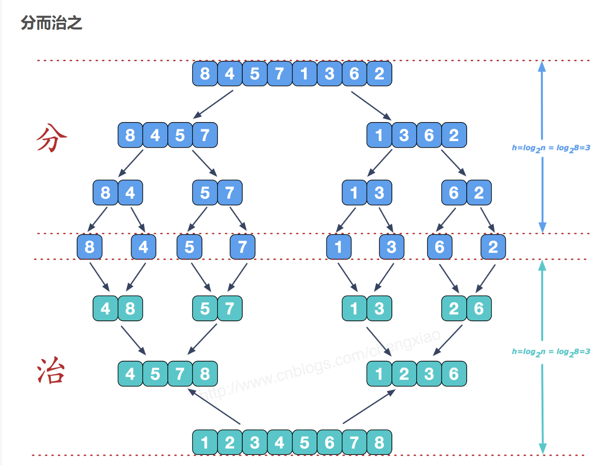
但是如果该国货币存在面值21，贪心策略就会失效：

引入：找零问题的递归解法：

def recMC(facevalues, amount):
if amount == 0:
return 0
best = float("inf")
for face in facevalues:
if 0 < face <= amount:
best = min(best, 1 + recMC(facevalues, amount - face))
return best # 无法正好找零时返回无穷大
如何解决？-> 用一个“记忆器”将计算过的结果保存下来，在计算之前查表看看是否已经计算过
def recDC(facevalues, amount, knownresult):
if amount == 0:
return 0
if knownresult[amount] is not None:
return knownresult[amount]
best = float("inf")
for face in facevalues:
if 0 < face <= amount:
best = min(best, 1 + recDC(facevalues, amount - face, knownresult))
knownresult[amount] = best
return best
memo = [None] * 64
recDC([1, 5, 10, 25], 63, memo)这里使用自顶向下的动态规划：保留递归写法，把算过的子问题存入记忆表。下面用自底向上填表得到相同的结果。
（5）动态规划
以不限枚数的硬币 1、3、4 凑 6 为例，贪心先拿 4，只能再拿两个 1；选 3＋3 却只要两枚。令 dp[x] 表示凑出金额 x 的最少枚数，从 dp[0] = 0 出发，对每种不超过 x 的面额 c 比较 1 + dp[x-c]。区别在于：贪心先固定一种选择，动态规划比较每种可能的最后一步。
在解决一个复杂问题时，如果这个问题可以分解成若干个 重叠子问题，并且问题的最优解可以通过 子问题的最优解组合 得到，那么就可以用动态规划来高效求解。
它和“分治”的区别是：分治子问题彼此独立，而动态规划的子问题会反复出现，所以需要“记忆化”来避免重复计算。
找零问题的动态规划解法：

从头遍历，每到一个金额就看这个金额对应的“上一个状态”（例如11元，查1加10， 查6加5， 查10加1）
def DPMakeChange(facelist, change, mincoins):
mincoins[0] = 0
for subchange in range(1, change + 1):
counts = float("inf")
# 当前金额只能使用不超过它的正面额。
for face in facelist:
if 0 < face <= subchange:
counts = min(counts, mincoins[subchange - face] + 1)
mincoins[subchange] = counts
return mincoins[change]
DPMakeChange([1, 5, 10, 21, 25], 63, [0] * 64) # 3 枚 21背包问题（博物馆大盗）：
博物馆里有 n 件宝物，第 i 件的重量为 w_i、价值为 v_i。
一个容量为 W 的背包，能装的重量有限。现在问题是：他怎样选择宝物装进背包，才能让总价值最大？
限制条件：
- 每件宝物只能拿或者不拿（0/1 背包），不能切割。
- 装进去的总重量不能超过背包容量 W。
目标是最大化价值

i 表示考虑前 i 个宝物
w 表示当前背包容量上限为 w
m[(i, w)] 表示在这两个条件下能取得的 最大价值

tr = [None, {'w': ..., 'v': ...}, ...]
max_w = 20 # 大盗的最大承重
m = {(i, w): 0 for i in range(len(tr)) for w in range(max_w+1)} # 这里用了一个字典来当作二维 DP 表
for i in range(1, len(tr)):
for w in range(1, max_w + 1):
# 前i件的重量大于w, 装不下第i件宝物
if tr[i]['w'] > w:
m[(i, w)] = m[(i - 1, w)]
else:
# 不装第i件和装第i件取一个最大值
m[(i, w)] = max(
m[(i-1, w)],
m[(i-1, w - tr[i]['w'])] + tr[i]['v'] # 从容量中减去第i件的重量，加上它的价值
)这个问题用递归+记忆化去解：
from functools import lru_cache
tr = [(2, 3), (3, 4), (4, 8), (5, 8), (9, 10)]
def Bag(tr, w):
@lru_cache(maxsize=None)
def best(i, remaining):
if i == len(tr) or remaining == 0:
return 0
weight, value = tr[i]
# 缓存用物品位置；即使两件物品重量、价值相同，也能分别选择。
vmax = best(i + 1, remaining)
if weight <= remaining:
vmax = max(vmax, value + best(i + 1, remaining - weight))
return vmax
return best(0, w)
Bag(tr, 20)3.3 排序算法
（1）排序算法的分类
是否基于比较
- 基于比较：冒泡、插入、选择、希尔、归并、快速、堆排序等。一般比较排序的最坏情况比较次数下界为 \Omega(n \log n)。
- 非比较：计数排序为 O(n+k)，其中 k 是取值范围大小；桶排序和基数排序的成本分别取决于输入分布及分桶方式、位数与基数。
就地排序（in-place） vs 需要额外空间
- 冒泡、插入、选择、希尔、堆排序，以及使用原地分区的快排可直接在原数组上操作。快排仍需递归栈；列表推导式的快排还会创建额外列表。
- 需要额外空间：归并、计数、桶、基数
稳定性（相等元素相对顺序是否保留）
- 冒泡、插入、归并，以及恰当实现的计数、桶、基数排序可以做到稳定。
- 不稳定：选择、希尔、快排、堆排序
（2）冒泡排序
最坏时间复杂度为 O(n^2)；若一轮没有交换即可提前停止，最优为 O(n)。
核心思想：通过一轮两两交换的循环，每一轮会把最大的元素“冒”到末尾
def bubbleSort(arr):
n = len(arr)
for i in range(n-1): # 外层用于控制循环的趟数
swap = False
for j in range(n-1-i):
if arr[j] > arr[j+1]:
arr[j], arr[j+1] = arr[j+1], arr[j] # 逐个比较,如果前面的值大于后面的值,就交换次序
swap = True
# 如果没有发生交换,说明排序完成
if not swap:
break
return arr（3）选择排序
即使输入已有序，也要扫描未排序部分寻找最小值，比较次数为 \Theta(n^2)。
核心思想：每一次循环，直接确定好最小值的Index，一步交换到位
def selectionSort(arr):
n = len(arr)
for i in range(n-1):
min_idx = i
for j in range(i+1, n):
if arr[j] < arr[min_idx]:
min_idx = j
# 一趟之后，直接交换到位
arr[i], arr[min_idx] = arr[min_idx], arr[i]
return arr为什么不稳定？ 设输入为 [2甲, 2乙, 1]，甲、乙只是区分相同键的标签。第一次把最小值 1 与首项交换后得到 [1, 2乙, 2甲]。两个 2 的相对顺序反转，所以这种交换式选择排序不稳定。
（4）插入排序
最坏时间复杂度为 O(n^2)；输入已有序时为 O(n)。
核心思想：把数组分成“已排序部分”和“未排序部分”，每次从未排序部分取一个元素，插入到已排序部分的正确位置。（像是码扑克牌一样）
def insertionSort(arr):
n = len(arr)
for i in range(1, n): # 从第二个元素开始
key = arr[i]
j = i # 让j指向当前的位置
while j >= 1 and arr[j - 1] > key: # 把这个key之前的比他大的元素往后挪一格
arr[j] = arr[j - 1]
j -= 1
arr[j] = key # 一轮腾完位置之后，将key插入到正确的位置
return arr插入排序的稳定性：插入新元素时，只右移严格大于它的元素，相等元素就能保持原有先后顺序。输入越接近有序，需要移动的元素通常越少。
（5）希尔排序
核心思想：先让相隔较远的元素先部分有序，再逐步缩小间隔，最后用插入排序收尾。（既然插入排序在数据是基本有序的时候非常快，就让他先变成基本有序）
选一个 gap（步长），把数组分成 gap 个子序列
在每个子序列中做插入排序
缩小 gap，重复步骤 2，直到 gap=1（最后一次就是普通插入排序）
def shell_sort(arr):
n = len(arr) # 数组长度
gap = n // 2 # 初始步长：n的一半（典型的希尔序列）
while gap > 0: # 步长逐步缩小直到1
for i in range(gap, n): # 从第gap个元素开始，对每个“子序列”做插入排序
key = arr[i] # 要插入的值（插入排序的key）
j = i
# ——“按gap间隔”的插入排序——
while j >= gap and arr[j - gap] > key:
arr[j] = arr[j - gap] # 腾位置：把前gap位置的元素后移gap
j -= gap # 指针跨gap向前继续比较
arr[j] = key # 真正插入：把key放到空出来的位置
gap //= 2 # 步长折半
return arr（6）快速排序
分区大致平衡时为 O(n\log n)；若总选到极端值，最坏为 O(n^2)。
核心思想：选 pivot（基准值）。分区：把比 pivot 小的放左边，比 pivot 大的放右边（等于的放任意一边）。
简单方法：用Python的列表推导式，需要额外的空间
def quick_sort(arr):
if len(arr) <= 1: # 递归结束条件
return arr
pivot = arr[len(arr) // 2] # 取中间元素做 pivot
left = [x for x in arr if x < pivot]
middle = [x for x in arr if x == pivot]
right = [x for x in arr if x > pivot]
return quick_sort(left) + middle + quick_sort(right)Lomuto划分快排：
选数组的最后一个元素作为 pivot（基准值）。
用两个指针：
i：指向“已处理的、小于 pivot 区域”的最后一个位置j：扫描指针，从头到尾（除了 pivot 本身）遍历
遍历时，如果 arr[j] < pivot ，就把 i 向右挪一格，并交换 arr[i] 和 arr[j] 。
遍历完后，将基准值与 arr[i + 1] 交换。基准值左侧严格小于它，右侧大于或等于它。
指针i用于确定pivot最终被置放的位置，指针j用于扫描
def lomutoPartition(arr, low, high):
pivot = arr[high]
i = low - 1
# 小于基准值的元素移到左侧，未处理元素由 j 扫描。
for j in range(low, high):
if arr[j] < pivot:
i += 1
arr[i], arr[j] = arr[j], arr[i]
arr[i + 1], arr[high] = arr[high], arr[i + 1]
return i + 1
def quick_sort_lomuto(arr, low, high):
if low < high:
pi = lomutoPartition(arr, low, high)
quick_sort_lomuto(arr, low, pi - 1)
quick_sort_lomuto(arr, pi + 1, high)Hoare划分快排：
def hoarePartition(arr, low, high):
pivot = arr[low]
i, j = low - 1, high + 1
while True:
# 两个游标遇到等于基准值的元素都停止，避免重复值时越界。
i += 1
while arr[i] < pivot:
i += 1
j -= 1
while arr[j] > pivot:
j -= 1
if i >= j:
return j
arr[i], arr[j] = arr[j], arr[i]
def quick_sort_hoare(arr, low, high):
if low < high:
pi = hoarePartition(arr, low, high)
quick_sort_hoare(arr, low, pi)
quick_sort_hoare(arr, pi + 1, high)使用 Lomuto 或 Hoare 原地分区的常见快速排序实现都不稳定。
（7）归并排序
核心思想：“分而治之”

分：不断把牌一分为二，直到每一堆只剩下一张牌（自然有序）。
治：然后再一对一对地把小堆合并成大堆，合并时保持有序。
def mergeSort(arr):
if len(arr) <= 1:
return arr
mid = len(arr) // 2
left = merge_sort(arr[:mid])
right = merge_sort(arr[mid:])
return merge(left, right)
def merge(left, right):
result = []
i = j = 0
while i < len(left) and j < len(right):
if left[i] <= right[j]:
result.append(left[i])
i += 1
else:
result.append(right[j])
j += 1
# 把剩下的接上
result.extend(left[i:])
result.extend(left[j:])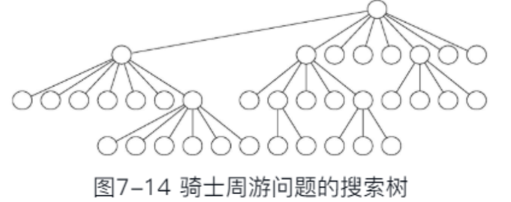
（8）堆排序
2.3 的优先队列每次取出一个优先元素；这里仍然使用堆顶，但把它放到数组末尾。要升序排列，就在未排序区间维护最大堆：堆顶与末项交换后，末项归位，缩短堆区间，再让新堆顶向下调整。
def heap_sort(a):
def sift(i, end):
# end 不属于堆；沿较大的子节点向下调整
while 2 * i + 1 < end:
child = 2 * i + 1
if child + 1 < end and a[child + 1] > a[child]:
child += 1
if a[i] >= a[child]:
break
a[i], a[child] = a[child], a[i]
i = child
for i in range(len(a) // 2 - 1, -1, -1):
sift(i, len(a))
for end in range(len(a) - 1, 0, -1):
a[0], a[end] = a[end], a[0]
sift(0, end)
a = [3, 1, 4, 2]
heap_sort(a)
assert a == [1, 2, 3, 4]自底向上建堆为 O(n)，整个排序最坏为 O(n\log n)；上面的迭代实现只用 O(1) 额外空间，不保证稳定性。
3.4 图的遍历与带权图算法
（1）广度优先算法 BFS
① 词梯问题
广度优先搜索（BFS）用队列按距离逐层探索：先访问距起点一步的顶点，再访问两步的顶点。无权图或所有边权相同时，首次发现某个顶点所走的边数就是最少边数。
词梯建模：每个等长单词是一个顶点；两个词恰好有一个字母不同，就连一条边。因此，最短变换序列等价于最少边数路径。例如：FOOL → POOL → POLL → POLE → PALE → SALE → SAGE。

- 首先是将所有单词作为顶点加入图中，再设法建立顶点之间的边，对每个顶点， 与其它所有单词进行比较， 如果相差仅1个字母， 则建立一条边
- 时间复杂度是O(n²)，对于所有4个字母的5110个单词，需要超过2600万次比较！
- 改进的算法是创建大量的桶， 每个桶可以存放若干单词，桶标记是去掉1个字母，通配符“_”占空的单词（词梯图是一个非常稀疏的图）

def buildWordGraph(wordFile):
d = {}
graph = Graph()
# 建立桶
with open(wordFile, 'r') as w:
for line in w:
word = line.rstrip("\r\n")
for i in range(len(word)):
bucket = word[:i] + '_' + word[i+1:] # 建立一个缺省一个字母的桶
if bucket in d:
d[bucket].append(word)
else:
d[bucket] = [word]
# 为每一个桶中的单词添加结点和边
for bucket in d.keys():
for word1 in d[bucket]:
for word2 in d[bucket]:
if word1 != word2:
graph.addEdge(word1, word2)
return graph② BFS 的实现
从起始顶点s开始， 作为刚发现的顶点，标注为灰色， 距离为0， 前驱为None（为顶点新添加的属性），加入队列， 接下来是个循环迭代过程：
- 从队首取出一个顶点作为当前顶点。
- 遍历它的邻接顶点。
- 对尚未发现的顶点，标记为灰色，距离设为当前顶点距离加 1，前驱设为当前顶点，再入队。
- 将当前顶点标记为已探索，继续处理队列。

def BFS(graph, start):
start.setDistance(0) # 初始距离为0
start.setPred(None) # 初始前驱为None
vertexQueue = Queue()
vertexQueue.enqueue(start) # 第一个单词入列
while(vertexQueue.size > 0):
currentVertex = vertexQueue.dequeue() # 在搜索过程中，从队列的首端取出一个单词
for nbr in currentVertex.getConnections():
if (nbr.setColor() == 'white'): # 如果该顶点未被探索
nbr.setColor('grey') # 标记为探索
nbr.setDistance(currentVertex.getDistance()+1) # 距离+1
nbr.setPred(currentVertex) # 设置前驱
vertexQueue.enqueue(nbr) # 入队
currentVertex.setColor('black') # 探索完成后，将结点设置为黑色
# 回溯
def traverse(y):
x = y
while (x.getPred()):
print(x.getId())
x = x.getPred()
print(x.getId())
wordgraph = buildWordGraph('xxx.txt')
BFS(wordgraph, wordgraph.getVertex('FOOL'))
traverse(wordgraph.getVertex('SAGE'))BFS算法主体是两个循环的嵌套
- while循环对每个顶点访问一次，所以是O(|V|)
- 而嵌套在while中的for，由于每条边只有在其起始顶点u出队的时候才会被检查一次
- 而每个顶点最多出队1次，所以边最多被检查1次，一共是O(|E|)
- 综合起来BFS的时间复杂度为O(|V|+|E|)
词梯问题还包括两个部分算法
- 建立BFS树之后， 回溯顶点到起始顶点的过程，最多为O(|V|)
- 创建单词关系图也需要时间，最多为O(|V|2)
（2）深度优先算法 DFS
① 骑士周游问题
骑士周游：从棋盘上的一个格子出发，骑士每次按合法的“日”字步移动。能否找到一条路径，恰好经过每个格子一次？
构建骑士周游图
将棋盘上每一个格表示为一个顶点，同时将骑士每一次合理走法表示为一条边：

# 合法走棋位置函数
def genLegalMove(x, y, bdSize):
# 定义一个检测边界的函数
def legalCoord(x, bdSize):
if x >= 0 and x < bdSize:
return True
else:
return False
newMove = []
moveOffsets = [
(-1, -2), (-1, 2), (-2, -1), (-2, 1),
(1, -2), (1, 2), (2, -1), (2, 1)
]
for i in moveOffsets:
newX = x+i[0]
newY = y+i[1]
if legalCoord(newX, bdSize) and legalCoord(newY, bdSize):
newMove.append((newX, newY))
return newMove构建走棋关系图（每一个坐标都要与其下一步合法移动进行连接）
def knightGraph(bdSize):
# 坐标到结点的映射
def posToNodeId(row, col, bdSize):
return row*bdSize + col
ktGraph = Graph()
for row in range(bdSize):
for col in range(bdSize):
# 把当前的node和下一步的位置进行全连接
nodeId = posToNodeId(row, col, bdSize)
newPosition = genLegalMove(row, col, bdSize)
for e in newPosition:
nid = posToNodeId(e[0], e[1], bdSize)
ktGraph.addEdge(nodeId, nid)
return ktGraph
② 骑士周游的回溯实现
深度优先搜索（DFS）沿一个分支尽量深入，无法继续时退回上一处分叉。普通图遍历会保留访问标记，避免重复展开顶点；骑士周游寻找的是一条经过所有格子且不重复的路径，需要回溯。
尝试一步时把格子加入当前路径。若没有可走的下一步且尚未走完棋盘，就撤销这一步及其标记，再试其他分支。撤销标记允许另一条候选路径使用这个格子，并不允许同一条路径重复经过它。
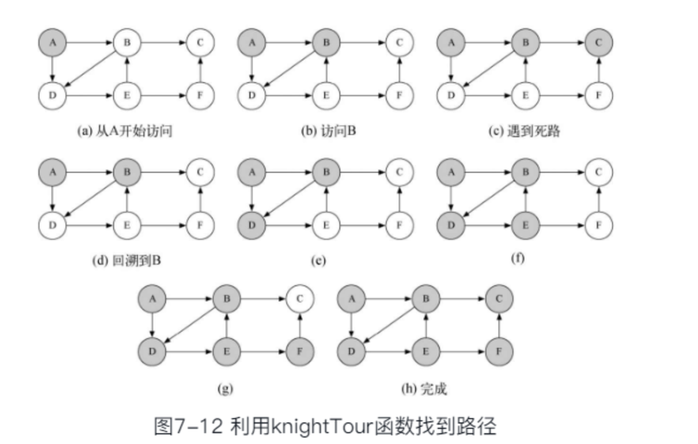
- 核心算法
- 如果沿着单支深入搜索到无法继续（所有合法移动都已经被走过了）时路径长度还没有达到预定值（8×8棋盘为63）；那么就清除颜色标记，返回到上一层换一个分支继续深入搜索
- 引入一个栈来记录路径并实施返回上一层的回溯操作
def knightTour(n, path, u, limit):
'''
n: 层次
path: 路径
u: 当前顶点
limit: 搜索总深度
'''
u.setColor('gray')
path.append(u) # 此处的path起到一个栈的作用
if n < limit:
# 对所有合法移动路径逐一深入
nbrList = list(u.getConnections())
i = 0
done = False
# 对当前结点下的所有后继结点进行深入
while i < len(nbrList) and not done:
if nbrList[i].getColor() == 'white': # 选择未经过的结点进行探索
done = knightTour(n+1, path, nbrList[i], limit) # 层次+1，递归深入
i += 1
# 如果当前节点下无法深入，则回溯到上一个节点,,将当前结点标记为未探索
if not done:
path.pop()
u.setColor('white')
# 如果某一只的结果达到了设定的最大深度，将done设置为True，一步一步向前回溯
else:
done = True
return done上述算法的性能高度依赖于棋盘大小：
- 就5×5棋盘，约1.5秒可以得到一个周游路径
- 但8×8棋盘，则要半个小时以上才能得到一个解
若搜索深度最多为 n（棋盘格数），每层分支数最多为 k 且 k>1，朴素回溯的搜索规模上界为 O(k^n)。启发式可以减少实际搜索量，但不改变这个粗略上界。


对骑士周游算法的改进：仅仅修改了一下nbrList的遍历顺序，让具有最少合法移动目标的格子优先进行搜索，就让8*8棋盘的搜索时间降低到了秒级
def orderByAvail(u):
resList = []
for v in u.getConnections():
if v.getColor() == 'white': # 选择未被探索过的结点
c = 0 # 以c记录该节点的
for w in v.getConnections():
if w.getColor() == 'white':
c+=1
resList.append((c, v))
resList.sort(key=lambda x: x[0]) # 按照c的个数进行排序
sortedList = [y[1] for y in resList] # 小的先遍历启发式规则Heuristic
- 采用先验的知识改进算法性能
- 启发式规则经常用于人工智能领域；
- 可以有效地减小搜索范围、更快达到目标等等；
- 如棋类程序算法，会预先存入棋谱、布阵口诀、高手习惯等“启发式规则”，能够在最短时间内从海量的棋局落子点搜索树中定位最佳落子。例如：黑白棋中的“金角银边”口诀，指导程序优先占边角位置等等
③ 通用 DFS
骑士周游算法是一种特殊的DFS算法，它建立了一个没有分支的最深的深度优先树，表现为一条线性的包含所有结点的退化树。
一般的深度优先搜索目标是在图上进行尽量深的搜索， 连接尽量多的顶点， 必要时可以进行分支（创建了树），有时候深度优先搜索会创建多棵树，称为“深度优先森林”
通用 DFS 为顶点记录以下状态：
- 前驱（Pred）：从哪个顶点发现当前顶点。
- 发现时间（Discover）：第一次访问的时刻。
- 完成时间（Finish）：所有相邻分支处理完毕的时刻。
带有 DFS 算法的图可以实现为 Graph 的子类。图中另外维护一个计数器 time，用于记录发现和完成时间。

class DFSGraph(Graph):
def __init__(self):
super.__init__()
self.time = 0
def DFS(self):
for aVertex in self:
aVertex.setColor('white')
aVertex.setPred(-1)
# 如果图是非连通的，则需要遍历所有顶点
for aVertex in self:
if aVertex.getColor == 'white':
self.dfsvisit(aVertex)
def dfsvisit(self, startVertex):
startVertex.setColor('grey')
# 算法步数+1
self.time += 1
startVertex.setDiscovery(self.time)
for nextVertex in startVertex.getConnections():
if nextVertex.getColor() == 'white': # 仅对未遍历的节点进行遍历
# 设置前驱
nextVertex.setPred(startVertex)
# DFS递归访问
self.dfsvisit(nextVertex)
# 探索完成，设置为黑色
startVertex.setColor('black')
self.time += 1
startVertex.setFinish(self.time)（3）拓扑排序
拓扑排序是有向无环图的一种顶点线性排列：对每条边 u\to v，顶点 u 都必须排在 v 前。若边表示先修关系，拓扑序就是一种合法的学习顺序；合法顺序不一定唯一。
DFS 做法：遍历所有顶点，在顶点的全部后继处理完毕时将它压栈。最终依次弹栈，即按完成时间从晚到早排列。若发现指向当前递归路径上顶点的边，则图中有环，不存在拓扑序。
（4）强连通分支与Kosaraju算法
强连通分量（SCC）是有向图中一个极大的顶点集合：集合中任意两点都能沿有向路径互相到达，且不能再加入其他顶点而保持这一性质。把每个分量缩成一个顶点，所得的缩点图一定是有向无环图。

- 图的转置：一个有向图G的转置GT，定义为将图G的所有边的顶点交换次序，如将(v,w)转换为(w,v)，转置图和原图的SSC数量和划分相同
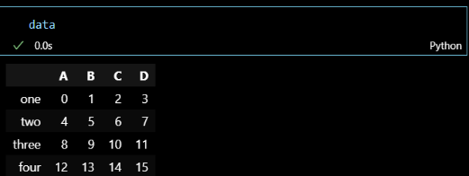
Kosaraju算法：
第一次 DFS
- 在原图上做 DFS，记录每个顶点的“完成时间”（finishing time）。
图转置
- 把原图里所有边的方向反过来，得到转置图（Transpose Graph）。
第二次 DFS
- 按照完成时间递减的顺序，在转置图上依次跑 DFS。
- 每次 DFS 能遍历到的顶点，就是一整个强连通分支。
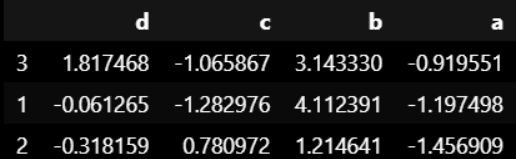
第一趟只遍历了1次，第二趟遍历了三次，划分出三组强连通分支：
（5）带权图最短路径问题
Dijkstra 算法
Dijkstra 算法求非负边权图的单源最短路径：给定起点 s，计算到每个可达顶点的最小总权重；记录前驱即可恢复路径。
- 初始化：起点的暂定距离为 0，其他顶点为无穷大。优先队列按暂定距离从小到大取点。
- 确定距离：取出暂定距离最小的未确定顶点 u。边权非负，之后绕经其他未确定顶点不会得到更短路径。
- 松弛邻边：对每条边 u\to v，计算候选距离 d[u]+w(u,v)。若它小于 d[v]，就更新距离、前驱和队列优先级。
重复取点和松弛，直到没有可达顶点待处理。不可达顶点的距离保持无穷大。
def dijkstra(aGraph, start):
pq = PriorityQueue() # 优先队列容器
start.setDistance(0) # 将起点的距离设置为0
# 为每一个顶点建立优先堆(distance, vertex)
pq.buildHeap([(v.getDistance(), v) for v in aGraph])
while not pq.isEmpty():
currentVertex = pq.delMin() # 优先队列出队
for nextVertex in currentVertex.getConnections():
newDist = currentVertex.getDistance() + currentVertex.getWeight(nextVertex)
# 修改出队顶点距离
if newDist < nextVertex.getDistance():
nextVertex.setDistance(newDist)
nextVertex.setPred(currentVertex) # 设置前驱
pq.decreaseKey(nextVertex, newDist) # 更新距离，引起堆重排- 标准 Dijkstra 要求边权非负，允许零权边。出现负边时，已确定的距离可能被更短路径改写，结果不再有正确性保证；可改用 Bellman–Ford，并检查是否有从起点可达的负环。
- 虽然Dijkstra算法完美解决了带权图的最短路径问题， 但实际上Internet的路由器中采用的是其它算法
- 邻接表配合二叉堆实现时，时间复杂度为 O((|V|+|E|)\log |V|)。

（6）最小生成树问题
最小生成树（MST）是连通无向带权图的一棵生成树：连接全部顶点、没有环，而且总边权在所有生成树中最小。含 n 个顶点的生成树恰有 n-1 条边；图不连通时，各连通分量的最小生成树合起来构成最小生成森林。
与最短路径的区别：最短路径最小化起点到目标的代价，最小生成树最小化连接全部顶点的总成本。树中两点之间的唯一路径不一定是原图里最短的那条。
① Kruskal 算法
在介绍Kruskal算法之前，需要先理解一种数据结构：并查集UnionFind：

如果节点被放入同一个并查集，说明他们是联通的
class UnionFind:
def __init__(self, n):
# parent的元素：子 -> 父
self.parent = {v: v for v in n} # 初始化的时候，把传入的元素集合 n 全部拿出来，每个元素的父亲都设为自己。
def find(self, x):
if self.parent[x] != x: # 如果不是，就递归往上找它父亲的父亲，直到找到根。
self.parent[x] = self.find(self.parent[x]) # 路径压缩：在回溯的过程中把 x 的父亲直接改成根节点，下次再查的时候就很快。
return self.parent[x] # 如果 x 的父亲就是自己，那它就是根，直接返回。
def union(self, x, y):
rootx, rooty = self.find(x), self.find(y) # 先找到 x 和 y 的根节点。
# 如果根不同，说明它们不在同一个集合，那就把 rooty 的父亲指向 rootx，等于是把集合 y 挂到 x 上。
if rootx != rooty:
self.parent[rooty] = rootx
return True
return FalseKruskal的基本原理是：加边法
初始时取包含G中所有n个顶点但没有任何边的孤立点子图T=(V,{})，T里的每个顶点自成一个连通分量。下面将通过不断扩充的方式构造G的最小生成树。
将边集E中的边按权值递增的顺序排序，在构造中的每一步顺序地检查这个边序列，找到下一条(最短的)两端点位于7的两个不同连通分量的边e，把e加入T。这导致两个连通分量由于边e的连接而变成了一个连通分量。每次操作使T减少一个连通分量。不断重复这个动作加入新边，直到T中所有顶点都包含在一个连通分量里为止，这个连通分量就是G的一棵最小生成树。
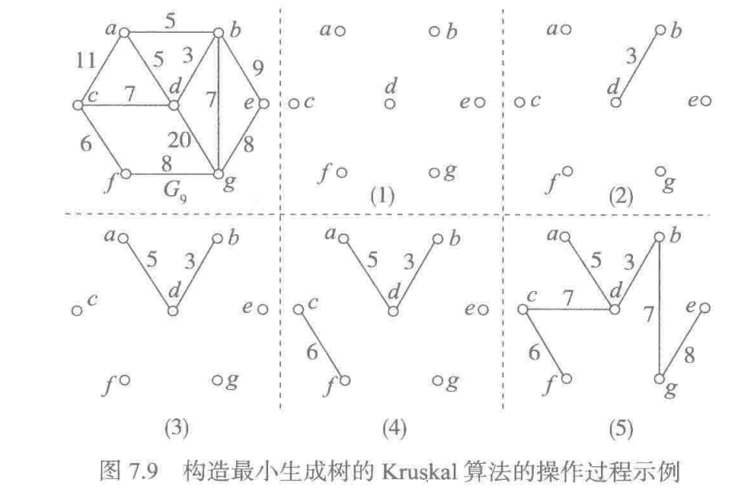
def Kruskal(graph, Graph):
edges = []
# 首先把边拿出来(weight, vertex, neighbor): (权重, 起点，终点)
for v in graph.vertList.values():
for nbr, w in v.connectedTo.items():
edges.append((w, v, nbr))
# 按照边的权重进行排序
edges.sort(key=lambda x: x[0])
# 初始化并查集
uf = UnionFind(graph.vertList.values())
mst = []
total_weight = 0
for w, v, n in edges:
if uf.union(v, n): # 如果u,v不在同一个集合，就加进去
mst.append((v.getId(), n.getId(), w))
total_weight += w
return mst, total_weight② Prim 算法
Prim的基本原理是：加边法。属于“贪心算法”， 即每步都沿着最小权重的边向前搜索。
随便选一个顶点作为起点。
从这个顶点出发，挑一条权值最小的边，把它连的那个点纳入生成树。
再从已经在树里的所有点出发，看外面剩下的点，找一条最小的边，把新点加进来。
在连通无向图中重复该过程，直到纳入所有顶点。如果输入不连通，这个实现只覆盖起点所在连通分量；要得到最小生成森林，需要从其他分量分别启动。
import heapq
from itertools import count
def prim(graph, start):
start_vertex = graph.getVertex(start)
if start_vertex is None:
raise KeyError(start)
visited = {start_vertex}
mst = []
total_weight = 0
order = count()
# 序号打破相同权重的平局，堆不需要比较 Vertex 对象。
edges = [(w, next(order), start_vertex, nbr)
for nbr, w in start_vertex.connectedTo.items()]
heapq.heapify(edges)
while edges and len(visited) < graph.numVertices:
w, _, v, n = heapq.heappop(edges)
if n in visited:
continue
visited.add(n)
mst.append((v.getId(), n.getId(), w))
total_weight += w
for nbr, weight in n.connectedTo.items():
if nbr not in visited:
heapq.heappush(edges, (weight, next(order), n, nbr))
return mst, total_weight